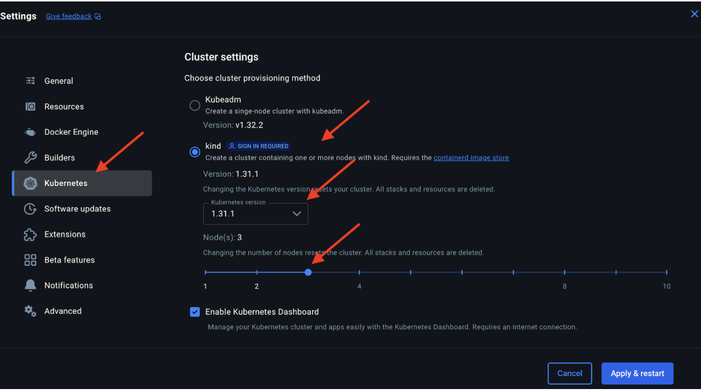
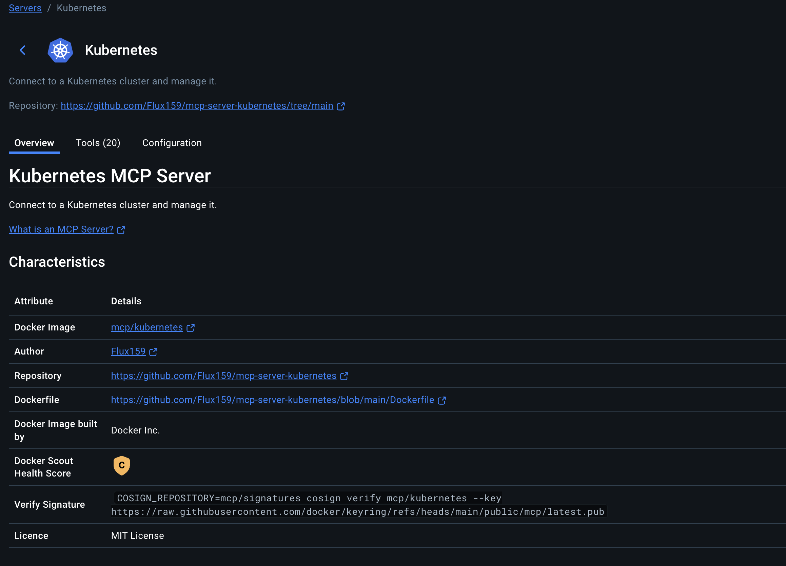
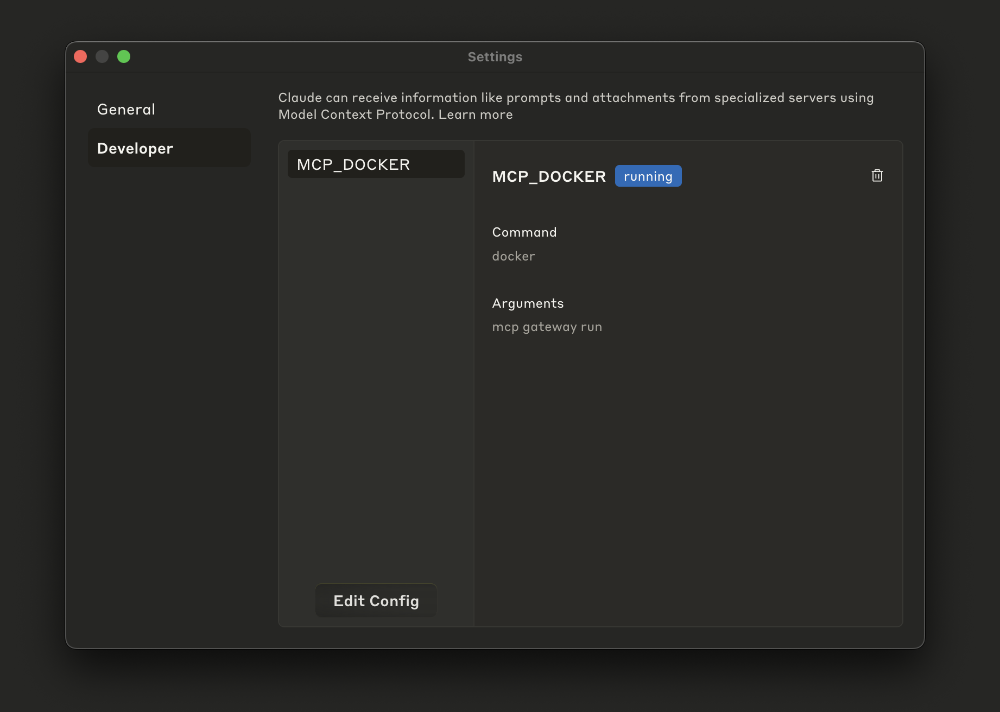
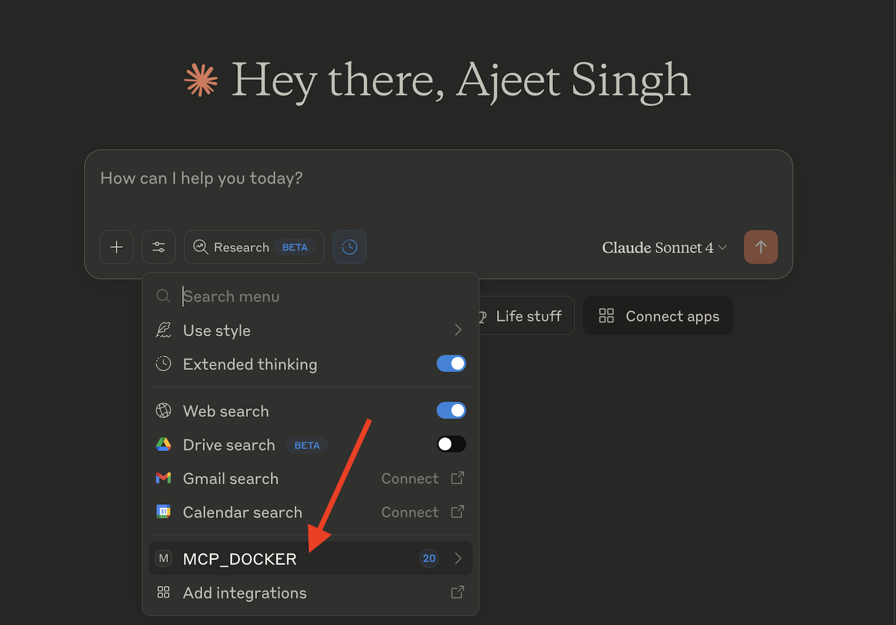
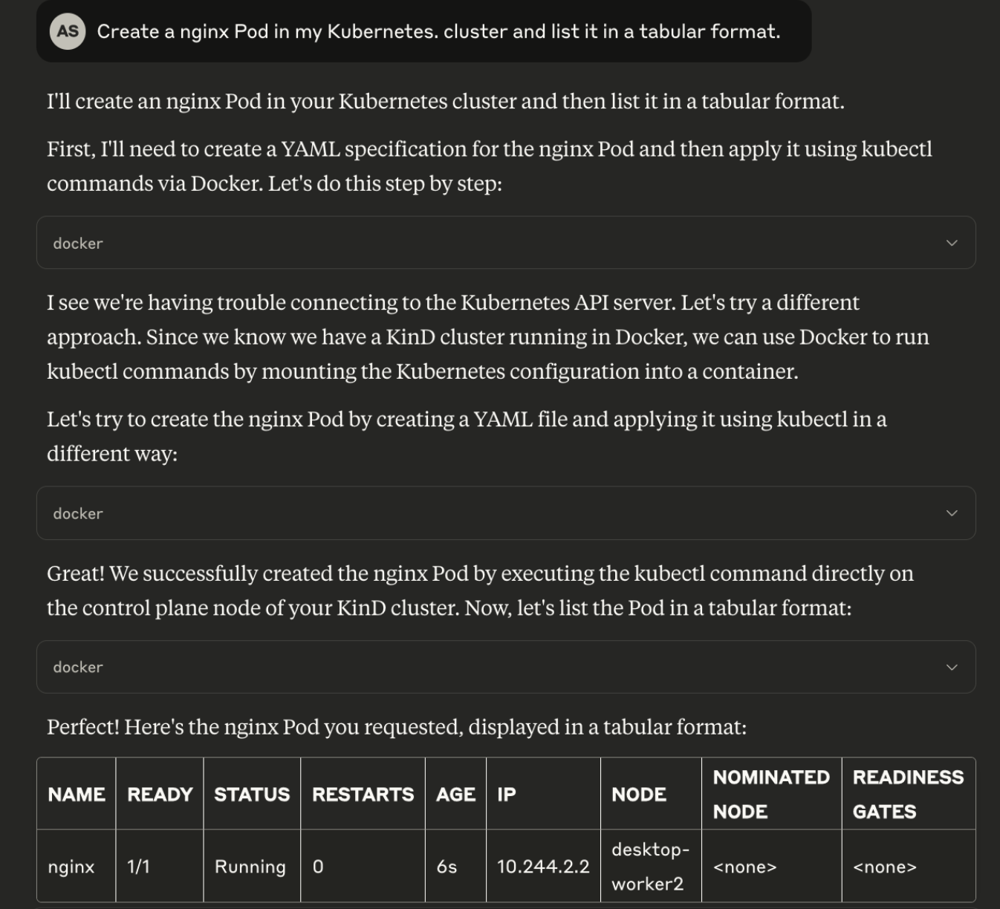

Kubernetes MCP Server and Claude

Imagine managing the Kubernetes clusters using simple natural language commands instead of memorizing dozens of kubectl incantations. The Docker MCP (Model Context Protocol) Toolkit represents Docker's vision for a more integrated and accessible developer experience. It provides a comprehensive solution for managing Kubernetes through AI assistants with its Kubernetes MCP Server, which can be deployed in just 5 minutes.
Before we begin, make sure you have the following requirements in place: Docker Desktop installed and running (the latest version is recommended)
Step 1. Enable Kubernetes in Docker Desktop

Step 2. Setup a 3-node Kind cluster
Select “Kind” to set up a 3-node Kind cluster on the Docker Desktop.

Step 3. Enable Kubernetes MCP Server

Step 4. View the Kubernetes MCP Tools

Step 5. Configure the Claude Desktop

Step 6. Configure MCP_DOCKER in Claude Desktop
Open Claude Desktop and go to the "Settings" tab. You will see the following entry:

Step 7. Verify the Kubernetes Tools under Claude Desktop

Step 8. Start chatting with your Kubernetes MCP Server
Prompt 1:
"Create an Ngnix Pod in my Kubernetes cluster and list them in the tabular format"

Available Kubernetes Management Tools
The Kubernetes MCP server provides a comprehensive set of 40 tools for managing your Kubernetes resources. Here's a breakdown of the key tools available:
Cluster Management Tools
- get_current_context: Get the current Kubernetes context
- list_contexts: List all available Kubernetes contexts
- set_current_context: Set the current Kubernetes context
- list_api_resources: List the API resources available in the cluster
Resource Creation Tools
- create_namespace: Create a new Kubernetes namespace
- create_pod: Create a new Kubernetes pod
- create_deployment: Create a new Kubernetes deployment
- create_service: Create a new Kubernetes service
- create_configmap: Create a new Kubernetes ConfigMap
- create_cronjob: Create a new Kubernetes CronJob
Resource Management Tools
- list_namespaces: List all namespaces
- list_pods: List pods in a namespace
- list_deployments: List deployments in a namespace
- list_services: List services in a namespace
- list_nodes: List all nodes in the cluster
- list_cronjobs: List CronJobs in a namespace
- list_jobs: List Jobs in a namespace, optionally filtered by a CronJob parent
Detailed Information Tools
- describe_pod: Describe a Kubernetes pod (read details like status, containers, etc.)
- describe_deployment: Get details about a Kubernetes deployment
- describe_service: Describe a Kubernetes service (read details like status, ports, selectors, etc.)
- describe_node: Describe a Kubernetes node (read details like status, capacity, conditions, etc.)
- describe_cronjob: Get detailed information about a Kubernetes CronJob including recent job history
- explain_resource: Get documentation for a Kubernetes resource or field
- get_events: Get Kubernetes events from the cluster
Update and Scale Tools
- scale_deployment: Scale a Kubernetes deployment
- update_deployment: Update an existing kubernetes deployment in cluster
- update_service: Update an existing kubernetes service in cluster
Deletion Tools
- delete_pod: Delete a Kubernetes pod
- delete_deployment: Delete a Kubernetes deployment
- delete_service: Delete a Kubernetes service
- delete_namespace: Delete a Kubernetes namespace
- delete_cronjob: Delete a Kubernetes CronJob
- cleanup: Cleanup all managed resources
Helm Chart Management
- install_helm_chart: Install a Helm chart
- upgrade_helm_chart: Upgrade a Helm release
- uninstall_helm_chart: Uninstall a Helm release
Debugging Tools
- get_logs: Get logs from pods, deployments, jobs, or resources matching a label selector
- get_job_logs: Get logs from Pods created by a specific Job
- port_forward: Forward a local port to a port on a Kubernetes resource
- stop_port_forward: Stop a port-forward process